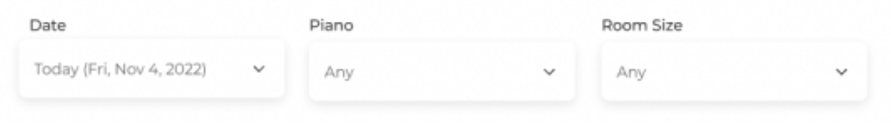

MuServe
Team
Qiran Li
Nicole Balsirow
Sourya Kakarla
Tools
ReactJS, Figma, Balsamiq
Timeline
3 months;
Oct. 3rd - Dec. 21st, 2023
1. Brief
This project originated from a common challenge faced by music students at Columbia University—difficulties in accessing practice rooms. In response, a music practice helper tool was developed for Columbia students, affording them the following capabilities:
- Exploring practice spaces across various halls with filters such as date and piano availability.
- Making room reservations for specific time slots using their UNI logins.
- Enhancing practice experiences by recording and reflecting on progress within the practice mood calendar.
- Managing short-term and long-term practice goals on a dedicated goals page.
The tool aims to simplify practice room usage, encourage productive habits, and optimize the musical learning journey for Columbia students.
2. Problem
Problem Statement: Students that play instruments or sing waste their time checking for the availability of practice rooms at several different residential halls across campus often struggle with utilizing their time in practice rooms efficiently.
Target User Population: Columbia students who use music practice rooms to practice their instrumental or vocal techniques.
3. Contextual Inquiry
3.1. Summary of Interviewed Individuals
User 1: An opera singer majoring in music and concentrating on environmental science. Used to frequent practice rooms last year, but became fed up with finding practice rooms and practices in their own room.
User 2: Cellist in the Columbia-Juilliard Exchange, majoring in linguistics. Practices almost daily, utilizing different practice rooms on campus.
3.2. Key Takeaways
- Both User 1 and User 2 had to modify their schedules due to the practice room availability.
- Certain times of the day and year contribute to high demand.
- Both individuals experienced the challenge of commuting between different dorms.
- Users also need to find practice rooms that fit their needs.
3.3. Reflection
Initially, we believed sharing needs were centered on music scores. Our initial problem statement focused on sending complete PDFs of scores via email or airdrop for students studying/practicing music. After the inquiry, we found that sharing needs also involved practice room reservations. Due to the absence of a dedicated reservation system, this presented a more significant challenge, notably related to access. Consequently, we pivoted our project's focus.
3.4. Two Potential Solutions Inspired by Contextual Inquiry
The findings from contextual inquiry led to the exploration of two ideas:
- Reservation System: The first solution enables booking of practice rooms, overcoming availability challenges. Users can schedule slots and reserve rooms through this system.
- Group Chat Connection: The second solution connects students via a group chat, fostering social interaction among those seeking practice rooms. They can discuss and coordinate practice plans, enhancing collaboration.
3.5. Comparison of Two Potential Solutions
| Idea | Pros | Cons |
|---|---|---|
| 1. Reservation System |
|
|
| 2. Group Chat Connection |
|
|
3.6. The Chosen Solution
After thorough analysis, the decision was to move forward with the reservation system concept, due to its intuitive nature. Casual interactions with music students also revealed an existing comprehensive group chat involving almost all music majors, aligning with the second idea and impacting the decision.
4. Comparative Analysis
A brief comparative analysis was conducted on the suggested solution, comparing it to two existing design solutions that also serve as reservation tools. The reservation system for the computer music center at Prentis Hall on 125th Street on campus and the room booking requests at Juilliard were examined.
5. Prototype #1 (Balsamiq)
The first prototype was crafted on Balsamiq, a tool that facilitates the creation of quick, interactive, low-fidelity versions. Its primary objective was to enable users to interact with the solution and provide feedback.
Verified Columbia students can book music rooms in various campus halls categorized by room size and features. User verification is done through UNI email.
Map interface displays halls geographically. Rooms can be filtered based on criteria. Unavailable halls are visually marked.
A table showcases hall info and available rooms with features. "Latest Slot" tab shows room availability with color-coded grids. Left tabs allow further filtering (e.g., "Piano", "Stands"). "Other Slot" option for future bookings.
Room selection leads to choosing 30-min slots and confirmation. "Need More Time?" offers flexible duration options.
Booking confirmation screen displays room, hall, features, and check-in link.
Design Logics
- User Authentication and Email Confirmation:
- Demand: Require Columbia students with valid UNIs. Optional email confirmation.
- Implementation: Mandatory UNI input, optional email confirmation checkbox.
- Possible Improvement: Shift confirmation checkbox to final confirmation page if needed.
- Interactive Map API:
- Demand: Help new users locate halls and rooms.
- Implementation: Employ Google API for a dynamic map responsive to main functions.
- Possible Improvement: Include hover info or varied colors for building availability.
- 2-Stage Filter Set + Map Response:
- Demand: User control for room selection.
- Implementation: Two stages: filter initialization (building) and filter alteration (room), map updates accordingly.
- Possible Improvement: Add more filters based on user feedback.
- 3-Color Availability Indication:
- Demand: Clear room availability visibility.
- Implementation: Green (available now), orange (available later today), purple (available future date).
- Possible Improvement: Adjust colors based on feedback.
- 3-Style Time Selection Option:
- Demand: Diverse time slot selection.
- Implementation: Green room (current or non-current 30-min slot, customizable), orange room (non-current 30-min slot, customizable), purple room (earliest available date).
- Possible Improvement: Vary default slot length.
- Aggregated Confirmation Page:
- Demand: Provide comprehensive reservation info.
- Implementation: Display filters, building name, address, room code, time slot, etc.
- Possible Improvement: Expand details as needed.
- (Future) Check-In Functionality:
- Demand: Allow room release if unchecked-in.
- Implementation: Options include QR code or geometry info with check-in link.
- (Future) Maximum Reserve Time:
- Demand: Prevent excessive reservations.
- Implementation: Set a cap on weekly reservation time (e.g. 4 hours).
- (Future) Dashboard of Rush Hour:
- Demand: Address user practice needs beyond reserved time.
- Implementation: Consider a rush hour dashboard for additional practice options.
6. User Study
6.1. Purpose
The evaluation aimed to reduce the risk of the project not addressing user concerns effectively. User-centered design was emphasized, involving three participants embodying the target users. Their interaction with the prototype yielded valuable feedback for future improvements.
6.2. Description of Evaluation Procedure
- Created screening questionnaires and recruited volunteers.
- Selected users for low-fi prototype evaluation.
- Conducted guided testing with user interaction.
- Encouraged users to verbalize thoughts during prototype interaction.
- Elicited post-session feedback on satisfaction, pain points, and suggestions.
- Analyzed average satisfaction scores and feedback.
- Compared notes for design improvement.
6.3. Key Insights & Future Project Direction
- Room Size Perspective: Streamline UI by omitting room size details.
- Optimized Filter Logic: Rework room filtering for direct filter-matched results.
- Visualizing Slot Availability: Implement color-coded indicators in time range tabs.
- Refined Booking Rules: Assess booking time limits and duration caps for priority.
- Booking Confirmation Enhancement: Add booking confirmation emails.
- QR Code Check-in Solution: Consider QR code check-in with 15-minute window.
- Prioritized Piano Room Allocation: Explore profile-based features for priority users.
- Scope Expansion Consideration: Discuss adding other practice spaces.
- UI Clarity Improvement: Refine non-intuitive UI elements, such as time range tabs.
- 'Need More Time' Clarification: Address confusion and benefits of the feature.
7. Risks & Mitigation Strategies
Outlined below are the key risks identified during the user study phase, along with the strategies in place to mitigate these risks as the project continues.
| Risk | Description | Mitigation |
|---|---|---|
| Lack of Users | Project failure due to insufficient user adoption. |
|
| Balance Between Majors | Difficulty in maintaining fair access for music and non-music majors. |
|
| Technical Expertise | Limited experience in web and application development. |
|
| Project Timeliness | Possible delays in project completion. |
|
| Bias and Design Focus | Project direction influenced by initial bias towards a reservation system. |
|
8. Prototype #2 (Hand-Drawn)
Based on the insights from the user study, a second prototype was quickly created to visually represent revisions.


9. Prototype #3 (Figma)
9.1. Video Demo
9.2. Justification of Design Choices
| Design Choice | Explanation |
|---|---|
|
Color Scheme - 60-30-10 Rule |
|
|
Filters Sequence  |
|
|
Typeface Selection |
|
|
Grid Layout - Asymmetric Design |
|
|
Visual Hierarchy - Slot Selection Page |
|
|
Visual Hierarchy - Home Page |
|
|
Arrow for Time Slots |
|
|
Floor Number for Floor Plans |
|
9.3. Strategies for Revised Visual Hierarchy
| Strategy | Explanation |
|---|---|
| Group Related Information |
|
| Emphasize in Each Chunk |
|
| Consolidate into Groups |
|
10. New Risk & Mitigation Strategies
Another risk emerged as the project progressed.
| Risk | Description | Mitigation |
|---|---|---|
| "Off-the-Shelf" Solution | Risk of the solution becoming a generic reservation system, lacking distinctiveness. |
|
11. Prototype #4 (Revised Hand-Drawn)
response to feedback that the proposed solution might resemble a generic reservation tool, the team decided to incorporate features to enhance the practice experience. Surveys highlighted negative emotions linked to practicing at Columbia due to room-finding difficulties and the practice process. The redesign aims to improve practice habits and time management via features to track goals and moods during daily practice sessions.
12. Prototype #4 (Revised Figma)
12.1. Video Demo
13. User Testing
13.1. Key Notes from User Study
-
Main Page: Goals
- Users appreciate the visibility of goals as the first thing they see.
- Goals section helps users focus on specific objectives for their practice sessions.
- The ability to add multiple goals and a potential sharing feature is valued.
-
Reservation:
- Users find information about room size, piano availability, and stands helpful.
- Tailoring features to specific instrument needs is crucial for user satisfaction.
-
Mood Tracking:
- Users already track mood manually and find the mood tracker intuitive.
- Suggested improvements include simpler mood options (e.g., good, bad, neutral) and a notes section for elaboration.
-
Overall:
- Users appreciate the holistic experience the solution offers, streamlining room reservation, practice sessions, and navigation.
- The linear experience is seen as an improvement over the disjointed nature of current practices.
13.2. Risks Discovered through User Study
The user study revealed student frustration regarding the actual task of practicing music, which differed from the initial pain point of finding practice rooms. This justified the significant pivot made in the team's approach. However, there remains a risk that these solutions may not effectively address users' pain points, for example:
- There's a concern that self-evaluation and app-based tracking might not resonate with most users.
- Users might not consistently provide ratings, leading to potentially incomplete or unreliable data. Can game mechanics be implemented to ensure that users give ratings consistently?
- Balancing innovation with time constraints presents a dilemma.
14. Final Prototype (ReactJS)
14.1. Video Demo
15. Reflection
Given a fixed 3-month timeline, the project's initial aim was to demonstrate the potential of the proposed solution. The final ReactJS prototype effectively achieves this objective. However, due to time limitations, the team couldn't create a fully functional prototype using an actual campus map API; instead, images of the campus were used. Newly identified risks in post-user studies, like the effectiveness of self-evaluation and app-based tracking, couldn't be thoroughly examined within the given timeframe. Despite these constraints, the project presents a viable solution for enhancing access to music practice rooms on campus and fostering positive practice habits and mindsets among students.